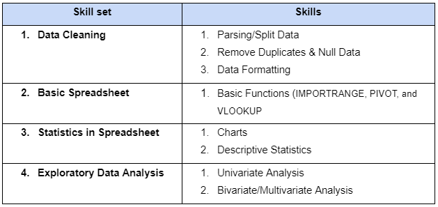
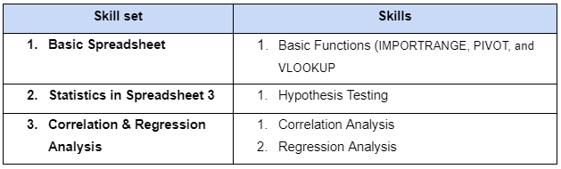

Spreadheet and Statistics Course Projects
This project is the application of skills that have been learned in a course.
We were given datasets and instructions to follow. And here are the results:
(Note: All the result is in a g-sheet file. You can see the context and summary in the 'overview' sheet)
Intermediate projects
Case 1: Property Listings Price in Kuala Lumpur
See the result here.
Case 2: E-commere Public Dataset
See the result here.
Advance projects
Case 3: E-commere Public Dataset (Part 2)
See the result here.
Case 4: A/B Test Result Dataset (Hypothesis Testing)
See the result here.
Context:
Given the experiment results from the control and experimental group, we have a hypothesis that the new page (treatment group) will give a better convertion rate.
1) Test whether the hypothesis is proven or not using z-test.
2) Determine whether the test reject or fail to reject the hypothesis.